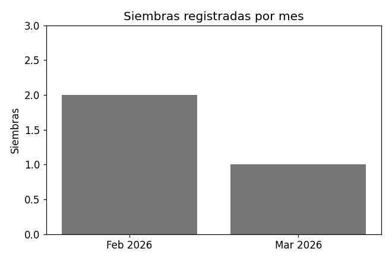
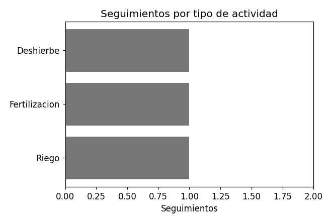

Estadísticas generales
Requisito RF-56: consultar las cuatro estadísticas del sistema.
| Indicador | Cifra |
|---|---|
| Total de siembras | 3 |
| Total de cosechas | 2 |
| Total de incidencias | 2 |
| Total de seguimientos | 3 |
Gráficas del sistema
Requisito RF-57: consultar las cuatro gráficas del sistema.
Siembras por mes

Seguimientos por tipo de actividad

Incidencias por tipo

Producción por cultivo